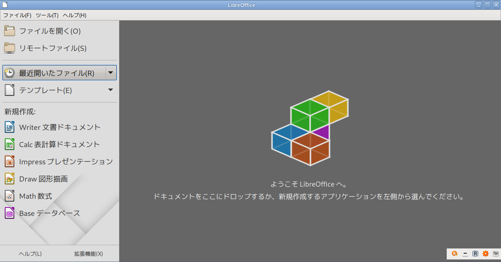

HOME

LibreOffice 無料で自由なオフィス・スイート
基本機能 - LibreOffice とは何ですか？
統合オフィス・スイートとして、以下の機能を備えています。
- ワープロ (Writer)
- 表計算 (Calc)
- データベース (Base)
- プレゼンテーション (Impress)
- HTMLエディタ
- 描画 (Draw)
- 数式エディタ (Math)
- マクロ
概要について
LibreOffice
は、オープンソースなソフトウェアで開発された統合オフィス・スイートです。無料で配布されています。LibreOffice
の前身は、OpenOffice.org という団体が同名で配布していたオフィス・スイートで、OpenOffice.org
の内容や機能をそのまま引き継ぎ、事実上それをさらに開発・発展させたものです。
元の OpenOffice.org という開発組織は2011年に解散し、 Apache OpenOffice と
LibreOffice に分裂した形で開発が継続されることとなりました。Apache OpenOffice
は、オラクルから寄贈されたOpenOffice.org のソースコードの著作権ならびに商標を保有しており、Apache
ライセンスで公開されている一方、LibreOffice は独自の修正や機能が取り込まれ、LGPLv3 ライセンスで公開されています。
LibreOffice では、現在開発が活発に行われており、多くの Linux
ディストリビューションで標準のオフィス・スイートとして採用されています。名称の「LibreOffice」は仏語の「libre」と英語/仏語の
「office」からなる造語で、リーブルオフィスあるいはリブレオフィスと発音されています。英語風に読めば、リーブルオフィスとなるで
しょ う。
開
発元／入手先
公式ホームページ・アドレス http://www.libreoffice.org/
日本語解説ページ・アドレス http://ja.libreoffice.org/
開発元日本語版ダウンロードページ http://ja.libreoffice.org/download/
公式日本語ページでは希望のバージョンを選択すれば自動的にダウンロードが開始されます。同時に寄付ページも表示されますが、無料です。
ダウンロード可能なミラーサイトとして、次のアドレスもあります： http://ftp.jaist.ac.jp/pub/tdf/libreoffice/stable/
LibreOffice には Linux用だけでなく Windows や MasOS用のものも用意されていて、複数のプラットフォームで共有可能なオフィス・スイートです。
仕様が共通なので Windows で作成した文書は Linux でも利用可能です。
ただし大抵の Linux ディストリビューションではそれぞれに最適化された専用のバイナリ・パッケージを配布・管理しているので、こちらの利用をおすすめします。
一般ユーザーが開発元のパッケージをダウンロードして使うような場面は、最新版の機能を試すといった目的以外ではあまりないでしょう。
当ウェブサイトの
FAQ/Tips ページは？
オフィス・スイートのページにまとめてあります。OpenOffice.org
当時に作成したものが大半ですが、多くの情報は現在でも活用可能です。
LibreOffice は OpenOffice.org
を継承し発展させたものであるという事情から、過去のバージョンとも互換性が良く保たれています。
HOME